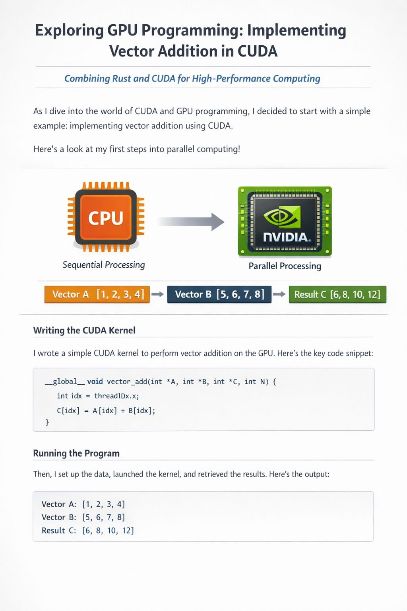

First CUDA program: vector addition
Today I implemented a CUDA program — vector addition on GPU.
Host vs. device
Host = CPU. Device = GPU.
Memory flow matters
Unlike typical CPU programs, CUDA requires explicit memory management:
- Allocate memory on CPU
- Allocate memory on GPU
- Copy data to GPU
- Execute kernel
- Copy results back
- Free memory
Memory is everything in CUDA
Performance in CUDA is heavily tied to memory allocation, CPU ↔ GPU transfer, and memory access patterns.
Source code: cuda_add.cu
